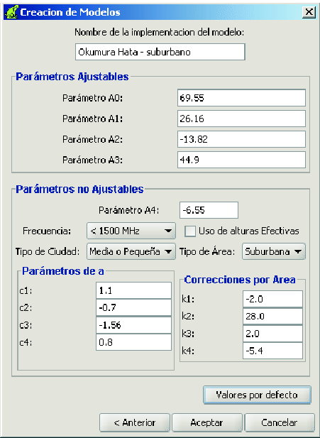

Siguiente: Cómo editar un modelo
Subir: Los modelos de propagación
Anterior: Los modelos de propagación
Índice General
Hay dos caminos diferentes por los cuales se puede crear un modelo
de propagación:
- Desde la barra de menú:
Menú Proyecto
 Crear Modelo de Propagación
Crear Modelo de Propagación
- Haciendo click con el botón derecho del mouse en el nodo MODELOS disponibles (nodo raíz) del explorador de
modelos:
Agregar Modelo
Aparecerá una ventana similar a la de la figura
7.
Figura 7:
Ventana para la creación de modelos
|
|
Seleccionar el modelo base entre la lista de modelos soportados y
clickear en Siguiente. Aparecerá la ventana de
parámetros de acuerdo al modelo seleccionado, por ejemplo la que se
muestra en la figura 8.
Figura 8:
Ventana para la creación/edición de un modelo basado en
Okumura-Hata COST231
|

|
Completar todos los parámetros; en cualquier momento si se desea
restaurar los valores por defecto clickear en Valores por
defecto. Luego de finalizar clickear en Aceptar.
El modelo creado se agregará al explorador.
Siguiente: Cómo editar un modelo
Subir: Los modelos de propagación
Anterior: Los modelos de propagación
Índice General
SAPO